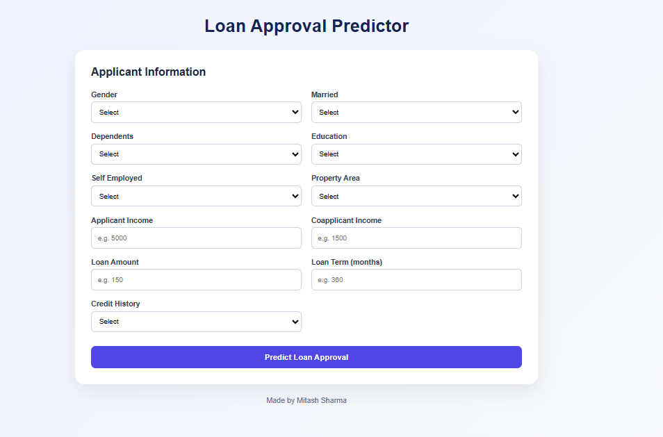
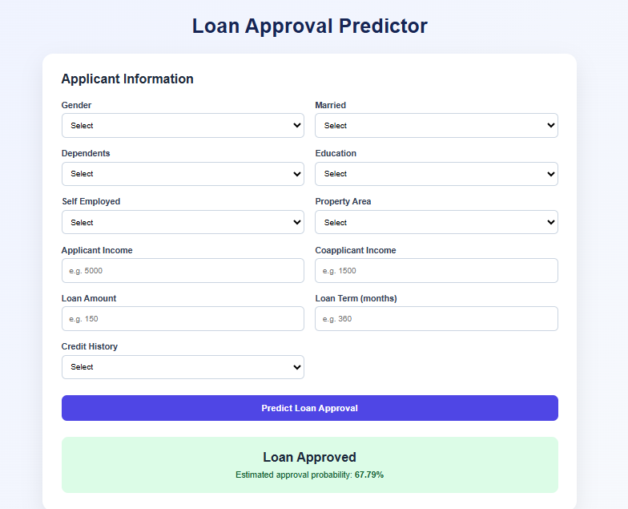

Loan Approver
A machine learning-based loan approval prediction system that analyzes applicant information and predicts whether a loan application is likely to be approved.
Project Overview
Loan Approver is a machine learning project designed to predict loan approval decisions based on information provided by loan applicants.
The system processes relevant applicant and financial information and uses a trained machine learning model to classify applications as approved or rejected.
The project demonstrates how machine learning can be applied to automate decision-support tasks and analyze patterns within financial application data.
Objective
The main objective of the Loan Approver is to develop a machine learning system capable of predicting loan approval outcomes from historical application data.
The system provides a simple way to evaluate an application and demonstrate how predictive models can assist in making consistent, data-driven decisions.
Key Features
- Loan approval prediction using machine learning
- Processing of applicant and financial information
- Data preprocessing and feature preparation
- Trained classification model for prediction
- Simple interface for entering applicant details
- Clear approval or rejection prediction output
How It Works
The process begins with a dataset containing historical loan applications and their corresponding approval outcomes.
The data is cleaned and prepared before being used to train a machine learning classification model. Relevant features are selected and transformed into a format suitable for model training.
When a user enters new applicant information, the trained model processes the input and predicts whether the loan application is likely to be approved or rejected.
Core Mechanics & Concepts
The project follows a typical machine learning workflow involving data preprocessing, feature selection, model training, and prediction.
Classification techniques are used because the target represents different loan approval outcomes.
The trained model is integrated with the application so that new applicant information can be passed through the same preprocessing and prediction pipeline.
Technologies Used
Project Workflow
Project Output
The application accepts relevant applicant information and provides a machine learning-based prediction of the loan application outcome.


Project Outcome
The project demonstrates the practical application of machine learning for binary classification and prediction using real-world-style financial data.
It also provided practical experience in data preprocessing, model development, Flask integration, and deploying machine learning predictions through a web interface.
Future Improvements
Future versions could include multiple machine learning models, model performance comparison, probability-based approval scores, improved feature engineering, explainable AI for prediction reasoning, and a more advanced dashboard for analyzing loan application patterns.
← All Projects